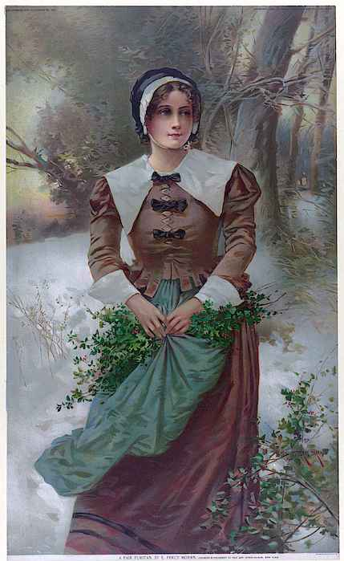

The Puritans were a religious group that emerged in England during the late 16th century. They sought to "purify" the Church of England, removing elements they believed were too closely tied to Roman Catholic practices. Their movement was deeply rooted in a desire for spiritual and moral reform, emphasizing strict adherence to Biblical teachings and a disciplined way of life.
Persecuted for their beliefs, many Puritans faced imprisonment and economic hardship in England. This led to their decision to seek religious freedom in the New World. In 1620, a group of Puritans, known as the Pilgrims, sailed aboard the Mayflower and founded the Plymouth Colony in what is now Massachusetts. Over the next few decades, waves of Puritan settlers followed, establishing communities throughout New England.
Puritan society was characterized by its rigid moral code and communal values. They believed that hard work, piety, and education were essential virtues. Education, in particular, was highly valued, as literacy was necessary to read the Bible. This focus led to the establishment of schools and colleges, such as Harvard University in 1636, which was originally intended to train ministers.
However, the Puritans' strict lifestyle also led to internal conflicts and controversies. Their intolerance for dissenters and other religious groups often caused friction within their communities and with neighboring settlements. Notable events like the Salem Witch Trials revealed the darker side of Puritan society, where fear and suspicion sometimes overshadowed their spiritual ideals.
Despite their challenges, the Puritans left a lasting legacy on American culture. Their emphasis on hard work, education, and self-governance influenced the development of American values and institutions. Today, the story of the Puritans serves as a testament to the enduring power of faith and determination in the face of adversity.